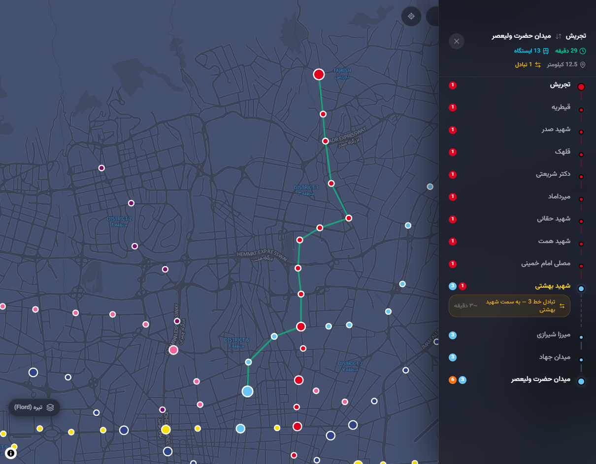

محاسبه مسیر با الگوریتم BFS روی گراف ایستگاهها — کاملاً سمت کلاینت و بدون نیاز به سرور

کوتاهترین مسیر بر پایه تعداد ایستگاه، با مشخص شدن نقاط تعویض خط و راهنمای تبادل.
محاسبه بر اساس فاصله هاورساین، توقف در ایستگاهها و زمان هر تبادل خط.
نقشه شماتیک آفلاین، OpenFreeMap در حالت روشن و تیره، و لایه ماهوارهای.
قابل نصب روی موبایل و دسکتاپ، با طراحی واکنشگرا و تم روشن و تاریک.